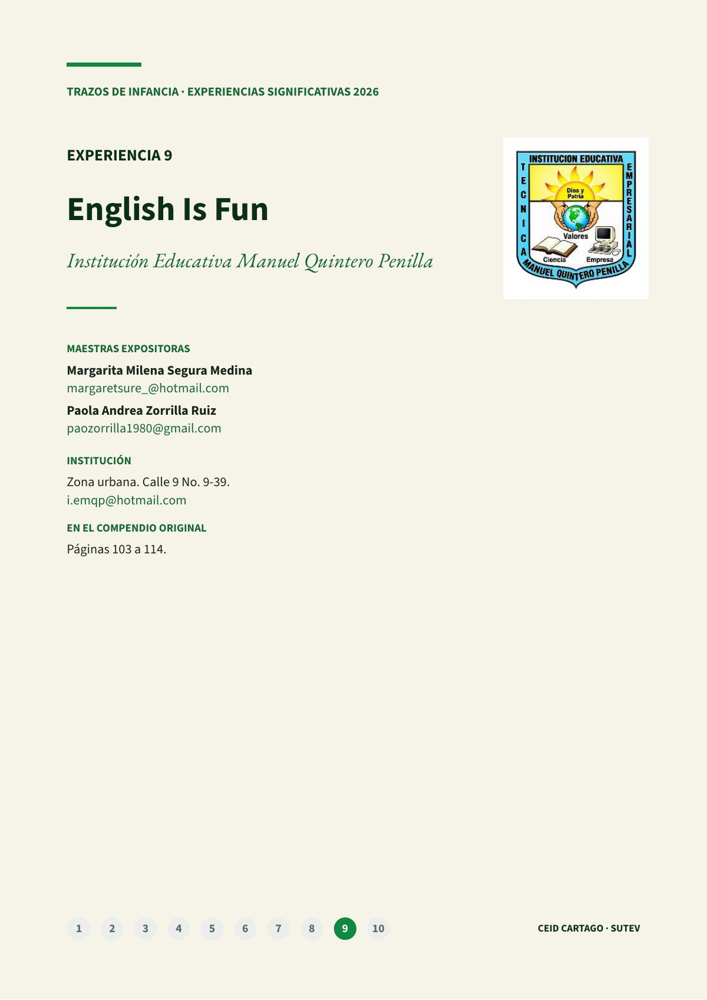
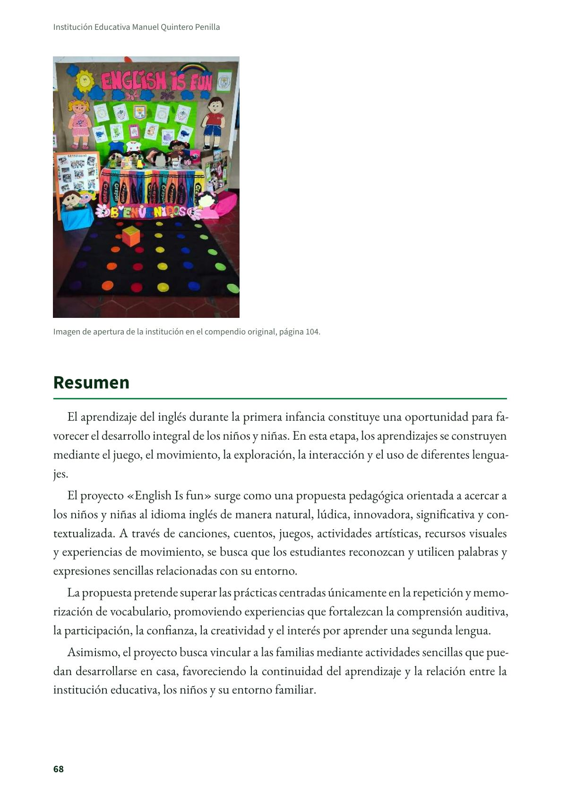
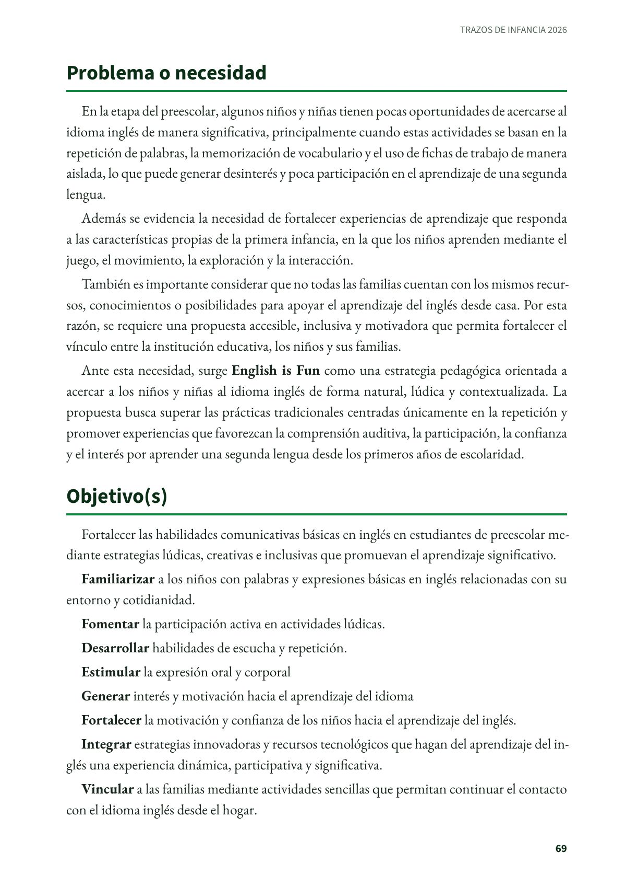
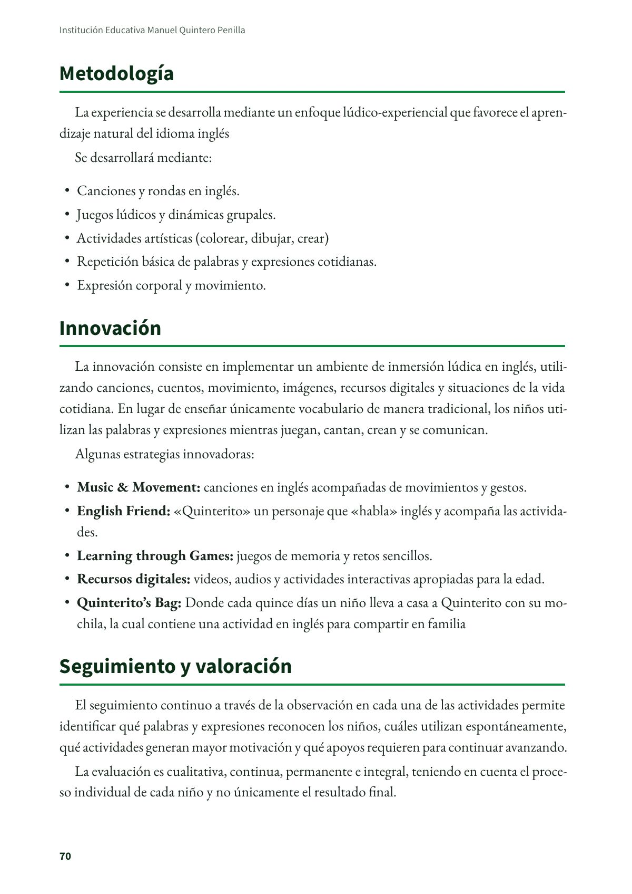
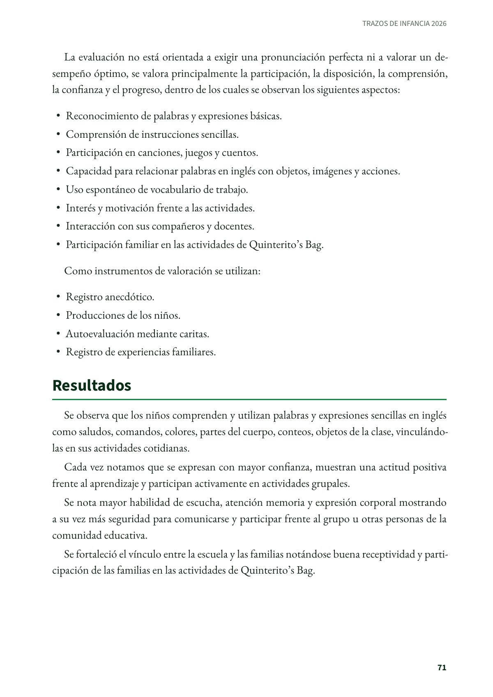
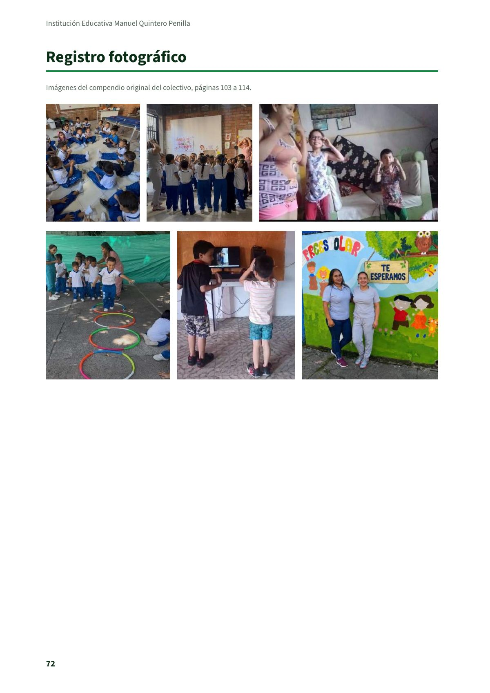

English Is Fun
Experiencia significativa en educación inicial de la Institución Educativa Manuel Quintero Penilla, de Cartago, tal como la presentaron sus maestras en el compendio del colectivo Trazos de Infancia.
PDF · 6 págs. · 285 KBResumen
El aprendizaje del inglés durante la primera infancia constituye una oportunidad para favorecer el desarrollo integral de los niños y niñas. En esta etapa, los aprendizajes se construyen mediante el juego, el movimiento, la exploración, la interacción y el uso de diferentes lenguajes.
El proyecto «English Is fun» surge como una propuesta pedagógica orientada a acercar a los niños y niñas al idioma inglés de manera natural, lúdica, innovadora, significativa y contextualizada. A través de canciones, cuentos, juegos, actividades artísticas, recursos visuales y experiencias de movimiento, se busca que los estudiantes reconozcan y utilicen palabras y expresiones sencillas relacionadas con su entorno.
La propuesta pretende superar las prácticas centradas únicamente en la repetición y memorización de vocabulario, promoviendo experiencias que fortalezcan la comprensión auditiva, la participación, la confianza, la creatividad y el interés por aprender una segunda lengua.
Asimismo, el proyecto busca vincular a las familias mediante actividades sencillas que puedan desarrollarse en casa, favoreciendo la continuidad del aprendizaje y la relación entre la institución educativa, los niños y su entorno familiar.
Problema o necesidad
En la etapa del preescolar, algunos niños y niñas tienen pocas oportunidades de acercarse al idioma inglés de manera significativa, principalmente cuando estas actividades se basan en la repetición de palabras, la memorización de vocabulario y el uso de fichas de trabajo de manera aislada, lo que puede generar desinterés y poca participación en el aprendizaje de una segunda lengua.
Además se evidencia la necesidad de fortalecer experiencias de aprendizaje que responda a las características propias de la primera infancia, en la que los niños aprenden mediante el juego, el movimiento, la exploración y la interacción.
También es importante considerar que no todas las familias cuentan con los mismos recursos, conocimientos o posibilidades para apoyar el aprendizaje del inglés desde casa. Por esta razón, se requiere una propuesta accesible, inclusiva y motivadora que permita fortalecer el vínculo entre la institución educativa, los niños y sus familias.
Ante esta necesidad, surge English is Fun como una estrategia pedagógica orientada a acercar a los niños y niñas al idioma inglés de forma natural, lúdica y contextualizada. La propuesta busca superar las prácticas tradicionales centradas únicamente en la repetición y promover experiencias que favorezcan la comprensión auditiva, la participación, la confianza y el interés por aprender una segunda lengua desde los primeros años de escolaridad.
Objetivo(s)
Fortalecer las habilidades comunicativas básicas en inglés en estudiantes de preescolar mediante estrategias lúdicas, creativas e inclusivas que promuevan el aprendizaje significativo.
Familiarizar a los niños con palabras y expresiones básicas en inglés relacionadas con su entorno y cotidianidad.
Fomentar la participación activa en actividades lúdicas.
Desarrollar habilidades de escucha y repetición.
Estimular la expresión oral y corporal
Generar interés y motivación hacia el aprendizaje del idioma
Fortalecer la motivación y confianza de los niños hacia el aprendizaje del inglés.
Integrar estrategias innovadoras y recursos tecnológicos que hagan del aprendizaje del inglés una experiencia dinámica, participativa y significativa.
Vincular a las familias mediante actividades sencillas que permitan continuar el contacto con el idioma inglés desde el hogar.
Metodología
La experiencia se desarrolla mediante un enfoque lúdico-experiencial que favorece el aprendizaje natural del idioma inglés
Se desarrollará mediante:
- Canciones y rondas en inglés.
- Juegos lúdicos y dinámicas grupales.
- Actividades artísticas (colorear, dibujar, crear)
- Repetición básica de palabras y expresiones cotidianas.
- Expresión corporal y movimiento.
Innovación
La innovación consiste en implementar un ambiente de inmersión lúdica en inglés, utilizando canciones, cuentos, movimiento, imágenes, recursos digitales y situaciones de la vida cotidiana. En lugar de enseñar únicamente vocabulario de manera tradicional, los niños utilizan las palabras y expresiones mientras juegan, cantan, crean y se comunican.
Algunas estrategias innovadoras:
- Music & Movement: canciones en inglés acompañadas de movimientos y gestos.
- English Friend: «Quinterito» un personaje que «habla» inglés y acompaña las actividades.
- Learning through Games: juegos de memoria y retos sencillos.
- Recursos digitales: videos, audios y actividades interactivas apropiadas para la edad.
- Quinterito's Bag: Donde cada quince días un niño lleva a casa a Quinterito con su mochila, la cual contiene una actividad en inglés para compartir en familia
Seguimiento y valoración
El seguimiento continuo a través de la observación en cada una de las actividades permite identificar qué palabras y expresiones reconocen los niños, cuáles utilizan espontáneamente, qué actividades generan mayor motivación y qué apoyos requieren para continuar avanzando.
La evaluación es cualitativa, continua, permanente e integral, teniendo en cuenta el proceso individual de cada niño y no únicamente el resultado final.
La evaluación no está orientada a exigir una pronunciación perfecta ni a valorar un desempeño óptimo, se valora principalmente la participación, la disposición, la comprensión, la confianza y el progreso, dentro de los cuales se observan los siguientes aspectos:
- Reconocimiento de palabras y expresiones básicas.
- Comprensión de instrucciones sencillas.
- Participación en canciones, juegos y cuentos.
- Capacidad para relacionar palabras en inglés con objetos, imágenes y acciones.
- Uso espontáneo de vocabulario de trabajo.
- Interés y motivación frente a las actividades.
- Interacción con sus compañeros y docentes.
- Participación familiar en las actividades de Quinterito's Bag.
Como instrumentos de valoración se utilizan:
- Registro anecdótico.
- Producciones de los niños.
- Autoevaluación mediante caritas.
- Registro de experiencias familiares.
Resultados
Se observa que los niños comprenden y utilizan palabras y expresiones sencillas en inglés como saludos, comandos, colores, partes del cuerpo, conteos, objetos de la clase, vinculándolas en sus actividades cotidianas.
Cada vez notamos que se expresan con mayor confianza, muestran una actitud positiva frente al aprendizaje y participan activamente en actividades grupales.
Se nota mayor habilidad de escucha, atención memoria y expresión corporal mostrando a su vez más seguridad para comunicarse y participar frente al grupo u otras personas de la comunidad educativa.
Se fortaleció el vínculo entre la escuela y las familias notándose buena receptividad y participación de las familias en las actividades de Quinterito's Bag.
Maestras e institución
- Margarita Milena Segura Medina: margaretsure_@hotmail.com
- Paola Andrea Zorrilla Ruiz: paozorrilla1980@gmail.com
- Institución: Institución Educativa Manuel Quintero Penilla, zona urbana, Calle 9 No. 9-39. i.emqp@hotmail.com
Así se ve en el libro
6 páginas




